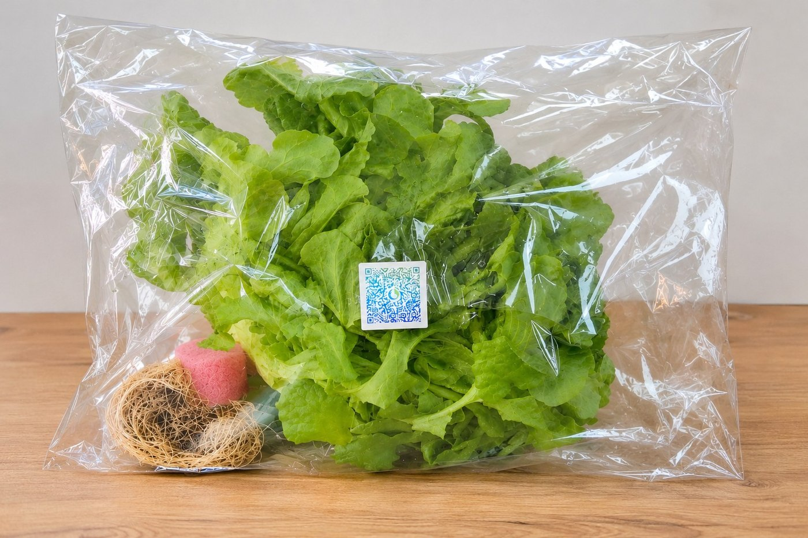
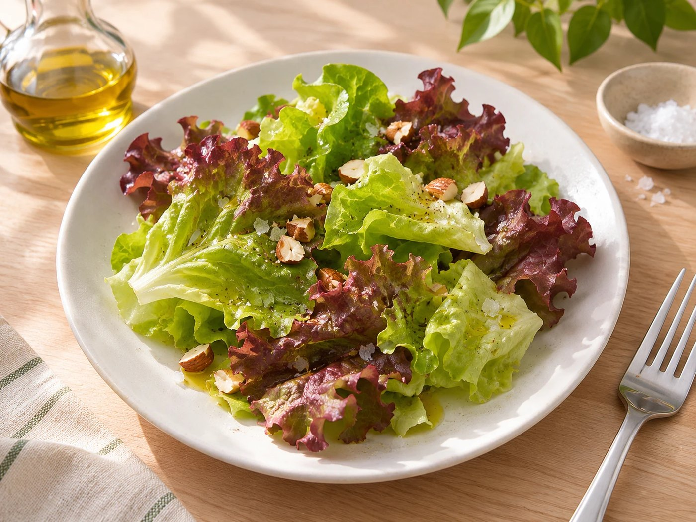
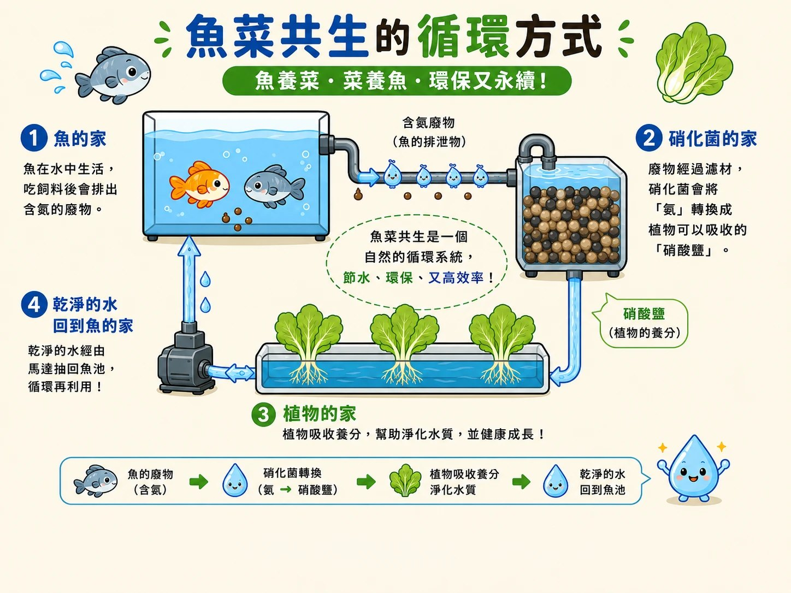

想吃什麼口感，挑哪一種



買回家怎麼保存
我們的萵苣連根採收、裝袋出貨。收到後整袋放進冰箱冷藏，大約可以放 7 到 10 天。
- 先不要洗，要吃之前再洗，葉子比較不容易爛。
- 根留著、袋口封好，避免葉子變乾。
- 葉子有點軟了，泡冰水幾分鐘就會恢復脆度。

怎麼吃
生吃最能吃到萵苣本身的味道。做沙拉基底，或夾進手卷、三明治、墨西哥捲餅都適合；最簡單的吃法是淋上橄欖油、撒一點海鹽。
想吃熟的，大火快炒 30 秒內起鍋，口感還會是脆的；甜脆萵苣最耐熱。雖然沒有使用農藥，吃之前仍建議用清水沖洗。
魚菜共生是什麼
魚在水裡生活，排泄物經過微生物轉化，變成蔬菜需要的養分；蔬菜吸收養分，水經過淨化再回到魚池。同一份水在系統裡反覆循環，所以用水比土耕少約九成。
系統裡養著魚，農藥和化肥都會影響魚的健康，所以我們的菜不用農藥，也不用化肥。北投農場裝了感測器，持續記錄水溫、酸鹼值和溶氧，數據異常時手機會收到通知。
